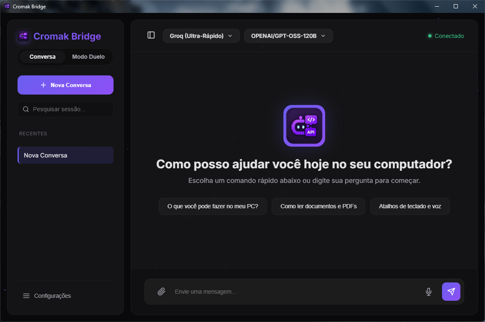
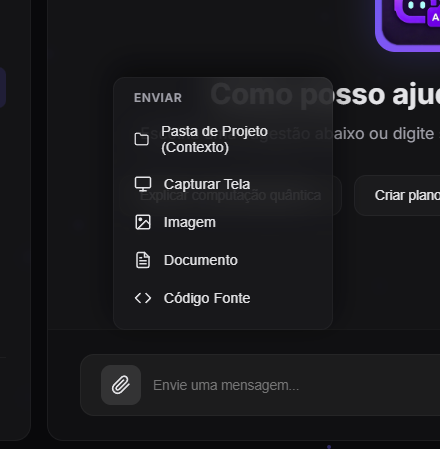
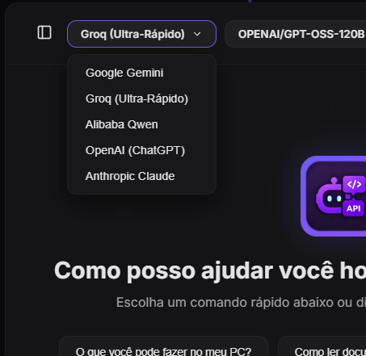
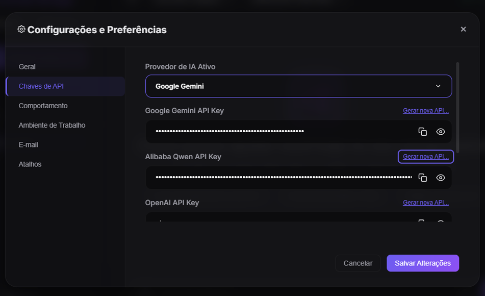
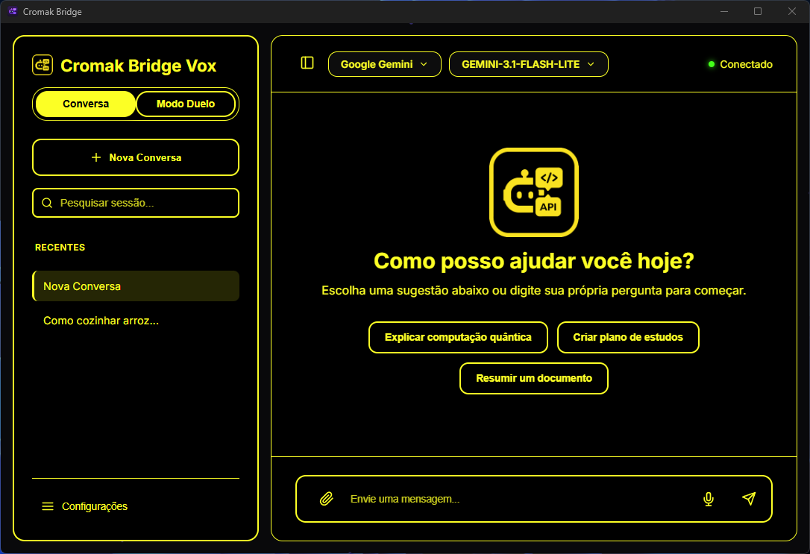
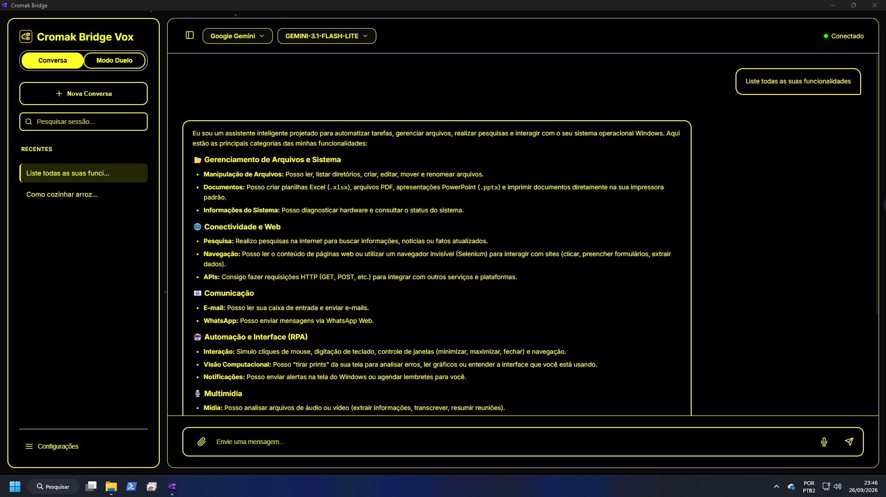
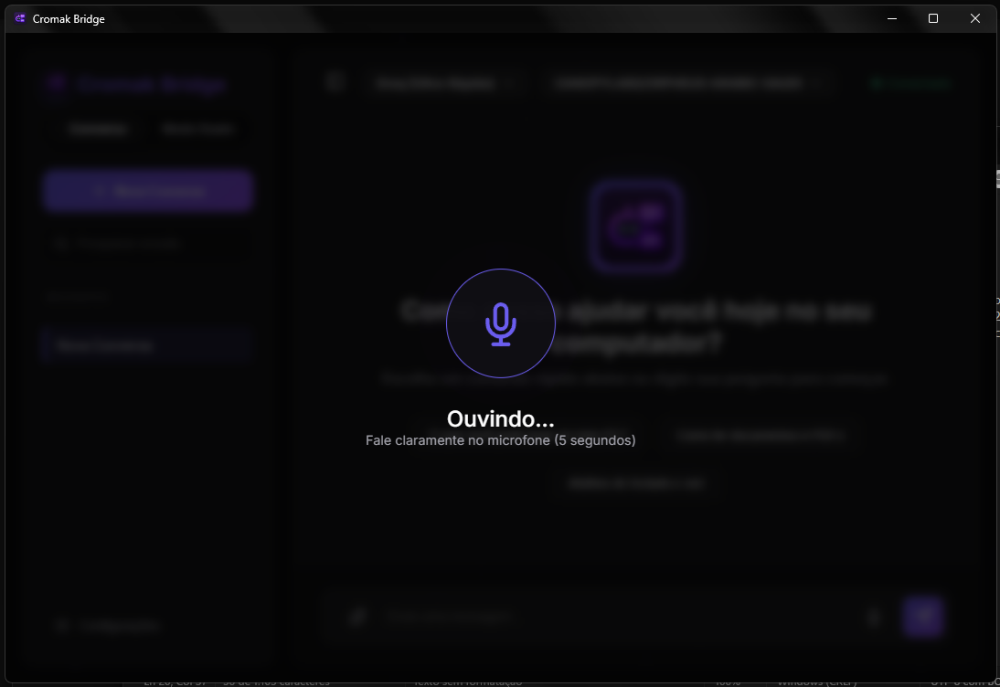

Cromak Bridge Vox
O Motor Inteligente do seu Desktop, focado em acessibilidade e autonomia total.
Versão: 1.3.7 (build 2026.11) | Matrix Core
A tecnologia só atinge seu verdadeiro potencial quando não deixa ninguém para trás. Acessibilidade não é um "recurso adicional", é o alicerce. O futuro da IA deve ser acessível a todos.

IA que Acessa Seu Sistema
Diferente de um simples chat no navegador, o Bridge Vox atua como um "Agente de Máquina" integrado ao Windows. Ele foi desenhado como uma evolução moderna de projetos clássicos de acessibilidade, mas agora alimentado diretamente pelas APIs mais rápidas e avançadas do mercado (Groq LPU Ultra-Rápido, Google Gemini, OpenAI, Claude e Qwen).
🤖 Auto-Coder Inteligente
O Modo Agente permite à Inteligência Artificial executar scripts, alterar, criar e excluir arquivos e pastas em seu sistema local. Um programador e assistente vivendo no seu PC.
👁️ Acessibilidade Extrema (NVDA)
Integração nativa com leitores de tela (NVDA e Narrador), foco automático de teclado, anúncios de voz em tempo real e Modo Alto Contraste (Preto e Amarelo) para Baixa Visão.
🔑 Arquitetura BYOK + Groq
Traga a sua própria chave. Conecte-se diretamente às APIs mais potentes do mundo (Groq em milissegundos, Google Gemini 2.5, OpenAI, Claude, Qwen). Sem assinaturas ou intermediários.
Visão Geral da Interface
Clique nas imagens para expandir e ver os detalhes do aplicativo.

Interface Principal
Visual moderno, tela cheia nativa e foco automático na caixa de mensagens assim que o programa abre.

Multimodal e Anexos
Anexe imagens, planilhas ou blocos de código com facilidade. O Bridge lê o contexto inteiro e trabalha em cima dos seus arquivos.

Troca de IA Instantânea
Precisa de respostas em milissegundos? Alterne entre Groq (LPU), Gemini 2.5, ChatGPT (OpenAI), Claude ou Qwen com um único atalho.

Controle Total
Menu completo e 100% acessível. Gerencie preferências, inicialização em tela cheia, bandeja do sistema e chaves de API com criptografia local.

Alto Contraste
Desenhado para pessoas com Baixa Visão. Fundos 100% pretos, bordas e textos amarelos brilhantes, eliminando a poluição visual.

Execução Autônoma
O Agente não apenas conversa, ele age. Ele mesmo abre sites, prepara e-mails, escreve relatórios e automatiza seu computador localmente.

Autonomia para Cegos (NVDA)
Operação 100% via teclado sem depender do mouse. Leitura fluida de respostas longas, ditado por voz (F2) e releitura instantânea (F3).
O que o Bridge pode fazer por você?
Muito além de um simples chat em uma aba do navegador. O Cromak Bridge é um verdadeiro "Agente de Máquina" capaz de interagir, ler e gerenciar o seu computador operando ferramentas avançadas em segundo plano.
Nossa Missão: Por que criamos o Bridge?
Acreditamos que o futuro da Inteligência Artificial não deve ser um luxo trancado por assinaturas mensais caras de 20 dólares, nem uma tecnologia excludente. O Bridge nasceu do profundo desejo de democratizar o acesso ao que há de mais avançado no mundo — entregando o poder das IAs nas mãos de escolas, instituições e, principalmente, pessoas com deficiência visual (Baixa Visão e Cegueira Total). O computador deve se adaptar ao humano, e não o contrário. É por isso que o Bridge escuta, fala, enxerga sua tela e executa os comandos, sendo os olhos e as mãos de quem precisa.
📁 Gerenciamento de Arquivos e Sistema
- Manipulação: Lê, edita, renomeia, move e lista arquivos e pastas locais.
- Bancos de Dados: Realiza consultas de leitura em bancos SQLite.
- Diagnóstico: Lê informações do hardware e do sistema operacional.
⚙️ Automação e Interface (RPA)
- Hardware/Software: Controla volume, bloqueia tela, gerencia janelas (maximizar, minimizar).
- Simulação: Consegue simular cliques de mouse e digitação no teclado.
- Notificações: Cria lembretes e envia notificações nativas do Windows.
🌐 Internet e Comunicação
- Abertura Nativa: Abre páginas web e o cliente de e-mail padrão do Windows já preenchido por comando de voz ou texto.
- Navegação Fantasma: Interage com sites complexos sem abrir o navegador (preenche formulários e extrai dados).
- Comunicação Direta: Lê caixas de entrada, envia E-mails e mensagens no WhatsApp Web.
📊 Multimídia, Produtividade e Visão
- Documentos e Mídia: Cria planilhas (Excel), apresentações e PDFs. Toca músicas, rádios ou baixa do YouTube.
- Análise de Tela: Tira prints da sua própria tela para descrever imagens, gráficos ou erros na interface.
- Memória: O Agente lembra de preferências e regras permanentes entre as conversas.
Por que o Cromak Bridge Vox é Único no Mundo?
Fizemos um comparativo direto e transparente entre os assistentes das Big Techs, agentes comerciais pagos, ferramentas para desenvolvedores e o Bridge Vox. Veja por que nenhuma outra solução entrega essa combinação:
| Critério / Recurso | Big Techs (Copilot / Siri / Alexa) |
Agentes Comerciais (Claude / ChatGPT / Devin) |
Open Source CLI (AutoGPT / Open Interpreter) |
Cromak Bridge Vox 🏆 |
|---|---|---|---|---|
| 100% Gratuito (Sem Assinatura) | ⚠️ Limitado (Empurra planos de $20/mês) |
❌ Não ($20 a $200+/mês) |
⚠️ Código grátis (Consome APIs pagas sem teto) |
✅ 100% Gratuito Suporte a chaves grátis (Groq/Gemini) |
| Agente Local no Windows (Auto-Coder) | ❌ Não (Sem acesso a scripts/comandos) |
⚠️ Parcial (Via nuvem ou prints caros) |
✅ Sim (Apenas tela preta/CLI) |
✅ Sim Execução nativa PowerShell/CMD |
| Busca Profunda de Arquivos (Sem Extensão) | ⚠️ Parcial (Focado em OneDrive/nuvem) |
❌ Não (Não acessa disco local) |
⚠️ Manual (Exige comandos técnicos) |
✅ Sim Busca em todas as pastas do usuário |
| Agenda Pessoal Offline com Alarme (SQLite) | ❌ Não (Exige login em nuvem externa) |
❌ Não (Sem persistência local) |
❌ Não (Não possui agenda embutida) |
✅ Sim Banco local + alarme 15 min antes |
| Acessibilidade Real (NVDA, JAWS & Cegos) | ⚠️ Genérica (Sem atalhos de releitura dedicados) |
❌ Inacessível (Baseado em visão/mouse) |
❌ Inviável (Terminal inacessível para leigos) |
✅ Nativa Atalhos F3/F11, voz e alto contraste |
| Privacidade e Soberania dos Dados | ❌ Telemetria (Dados alimentam nuvem) |
❌ Servidores Remotos (Histórico armazenado por terceiros) |
⚠️ Depende do Dev (Configuração manual) |
✅ Zero Telemetria Dados salvos exclusivamente no seu PC |
🎯 Conclusão: O Cromak Bridge Vox foi construído para resolver o que as Big Techs ignoram.
Enquanto as grandes empresas cobram mensalidades caras e prendem seus arquivos na nuvem, o Bridge Vox entrega autonomia, velocidade e inclusão verdadeira direto na sua máquina, sem cobrar um centavo por isso.
Privacidade e Local-First
-
Sem Servidores Intermediários (Zero Telemetria)
A Cromak Technology não atua como interceptadora. Suas mensagens e arquivos saem do seu PC e vão DIRETO para a Groq, Google, OpenAI ou Anthropic via sua API Key criptografada localmente.
-
Retentativa Inteligente e Ultra-Velocidade
Gerenciamento automático de fila contra gargalos de API gratuita e suporte à tecnologia LPU da Groq para respostas instantâneas em milissegundos, com avisos de estado dedicados para o NVDA.
-
Atalhos Globais e Controle 100% por Teclado
Invoque o Bridge de qualquer janela com Alt + Espaço ou Ctrl + Espaço. Pressione F2 para gravar voz, F3 (ou Ctrl + L) para reler a resposta no NVDA, F5 para nova conversa, F11 para Tela Cheia e F1 para Ajuda.
⚠️ Aviso sobre o Auto-Coder
O Bridge possui permissões de leitura e escrita no seu disco local se o "Modo Agente" for ativado. O uso é por sua conta e risco. Não nos responsabilizamos por arquivos excluídos ou scripts indesejados executados a pedido do usuário.
Tabela de Funções da IA
O Bridge possui ferramentas avançadas embutidas (Auto-Coder). Veja como testar algumas delas:
| Descrição da Habilidade | Exemplo de Comando (O que falar/digitar) |
|---|---|
| Ler arquivos locais (TXT, PDF, DOCX, etc.) | "Leia o arquivo relatorio.pdf na minha Área de Trabalho e resuma." |
| Criar Planilhas e Documentos | "Crie uma planilha do Excel em Downloads chamada Despesas com 3 gastos fictícios." |
| Abrir Sites e E-mails Nativamente | "Abra a página de suporte da Cromak" ou "Prepare um e-mail para o suporte relatando minha dúvida." |
| Navegar na Web (Navegador Fantasma) | "Acesse o site da Wikipedia sobre Python e extraia o resumo da página." |
| RPA (Simular Mouse e Teclado) | "Pressione a tecla 'win', digite 'calculadora' e aperte Enter para abrir o app." |
| Visão Computacional | "Tire um print da minha tela agora e descreva o que está aparecendo." |
| WhatsApp Web Automático | "Envie 'Olá, isso é um teste' para o meu número no WhatsApp." |
| Gestão de Janelas do Windows | "Minimize todas as janelas abertas para mostrar minha Área de Trabalho." |
| Controle de Hardware | "Abaixe um pouco o volume." ou "Ligue minha webcam silenciosamente e tire uma foto." |
| Lembretes e Notificações (Pop-up) | "Me envie uma notificação do Windows em 5 minutos lembrando de beber água." |
| Memória de Longo Prazo | "Memorize que minha cor favorita é azul." (Em outro dia: "O que você sabe sobre mim?") |
Internacionalização Nativa
Projetado para usuários e estúdios ao redor do mundo. Com reconhecimento automático do idioma do Windows e motor de tradução i18n em tempo real, toda a interface gráfica, atalhos e anúncios para leitor de tela (NVDA) se adaptam instantaneamente.
Compatibilidade do Sistema
Compilado de forma independente com instalador simplificado e 100% acessível. Não requer instalação de Python, bibliotecas ou dependências complexas na sua máquina. O software é extremamente leve e otimizado. Requisitos recomendados: Mínimo 4GB a 8GB de RAM e processador Core i3 (ou equivalente).
Nota: Compatível nativamente com leitores de tela (NVDA e Narrador do Windows) com suporte multilíngue em tempo real.
Validado na Prática
O Cromak Bridge Vox v1.3.7 não teria chegado ao seu nível de excelência e inclusão sem o apoio, a amizade e a consultoria técnica indispensável do jornalista e especialista em inclusão digital Gustavo Torniero. Amigo que dedicou seu tempo mais precioso para auditar o sistema no NVDA e apontar falhas críticas de ergonomia.
Uma ferramenta pensada desde o código-fonte para proporcionar autonomia real, fluidez com o NVDA e zero barreiras para pessoas cegas ou com baixa visão.
Faça o Download Oficial do software
O Cromak Bridge Vox é e sempre será um projeto 100% gratuito e sem anúncios. Construímos essa ferramenta não para lucrar com assinaturas, mas para derrubar barreiras de acessibilidade e tecnologia. Manter esse software atualizado, pagar os custos de hospedagem e desenvolver novas integrações de acessibilidade para quem realmente precisa exige tempo e recursos. Se este software mudou a sua rotina ou a da sua empresa, considere se tornar um patrocinador. Sua contribuição é o que mantém a roda girando e nos permite continuar impactando vidas através do código livre.
Uso Pessoal (Freeware)
- Software Completo (v1.3.7)
- Suporte a Groq, Gemini, GPT, Claude e Qwen
- 100% Acessível (NVDA & Alto Contraste)
- Auto-Coder & Agente Local
- Total Privacidade (Zero Telemetria)
Apoiador do Projeto
- Doe a quantia que desejar:
- Ajuda no aprimoramento contínuo do software
- Ajuda nas integrações com Windows
- Apoia as ferramentas de Acessibilidade
Código Aberto
- Repositório 100% Livre:
- Auditoria de código e transparência
- Documentação e compilação local
- Contribua com novas melhorias e PRs
🔒 Distribuído com orgulho pela Cromak Technology.